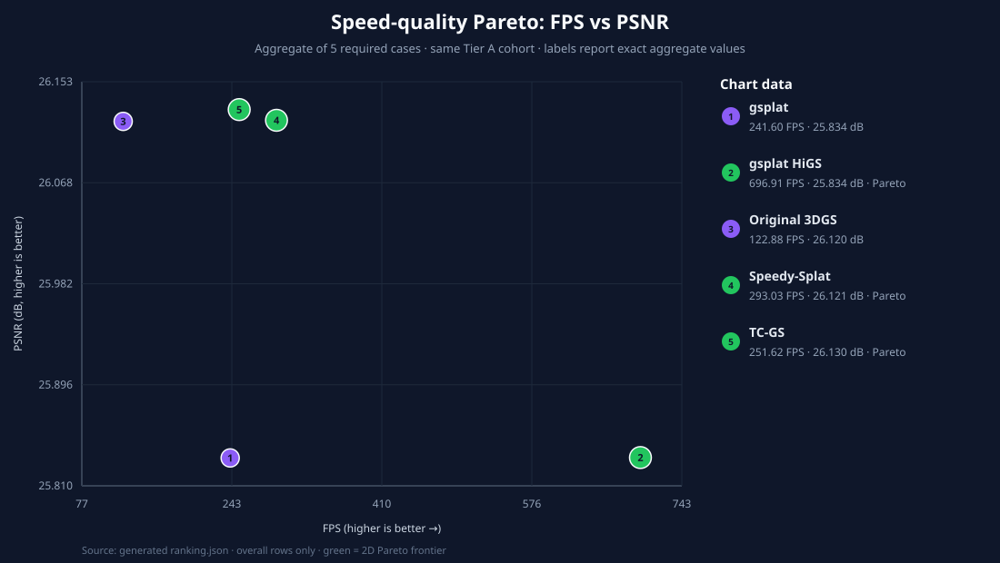

Five renderers measured on the same checkpoints, cameras, 1080p protocol, A100 GPU UUID, and strict NVML process-memory collector.

| Renderer | Speed index | FPS | PSNR | SSIM | LPIPS | Peak VRAM |
|---|---|---|---|---|---|---|
| gsplat HiGS | 5.671x | 696.91 | 25.834 | 0.8372 | 0.2649 | 6,616 MiB |
| Speedy-Splat | 2.385x | 293.03 | 26.121 | 0.8404 | 0.2637 | 4,276 MiB |
| TC-GS | 2.048x | 251.62 | 26.130 | 0.8401 | 0.2633 | 4,322 MiB |
| gsplat | 1.966x | 241.60 | 25.834 | 0.8372 | 0.2653 | 4,206 MiB |
| Original 3DGS | 1.000x | 122.88 | 26.120 | 0.8403 | 0.2637 | 8,234 MiB |